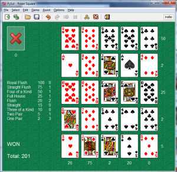
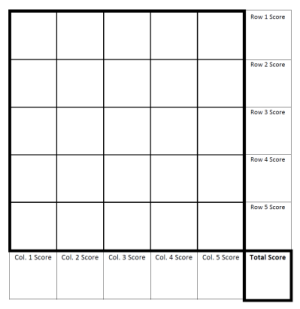

Given a shuffled deck,
25 cards are
individually dealt and placed into a 5-by-5 grid.
Each row and column is scored as a Poker hand according to a point system.
Challenge: Create a computer Poker Squares player that can play Poker Squares
given any point system!
(Contest description)
5/27/15: Announcements:
This is the latest distribution of the base code (documentation)
with only a minor bug fix to PokerSquares.java main method demo code. If teams would like to develop in a language
other than Java and the faculty mentor is willing to provide a Java
interface to such code, I will try to accommodate.
Deadlines have been finalized:
August 15, 2015:
Parameterized Poker Squares players (one per team) are due via email to
tneller@gettysburg.edu (Subject: Parameterized Poker Squares Challenge Submission).
These must meet base code interface specifications.
September 15, 2015:
Optional research papers on such players by student-faculty teams are due for submission to the
EAAI symposium via the
AAAI paper submission system. (More details are to come.)
If you've not already done so, please register your team.
Your student team members would have recently received these announcements
if I have their names and contact information.
Early testing: As an informal means of early
evaluation, teams are invited use
EarlyPPSTesting.java.
Simply:
edit the code, substituting your player for "RandomPlayer",
run the code (<= 11 hours), and
email me the last
comma-separated-value (CSV) line of your output by June 15th, 2015 (Subject:
“Parameterized Poker Squares Early Testing”).
Soon thereafter, I will distribute anonymous statistics on players’
performance for the different scoring systems of the testing.
11/19/14: How to introduce the Parameterized Poker Squares Challenge to
your faculty and students:
